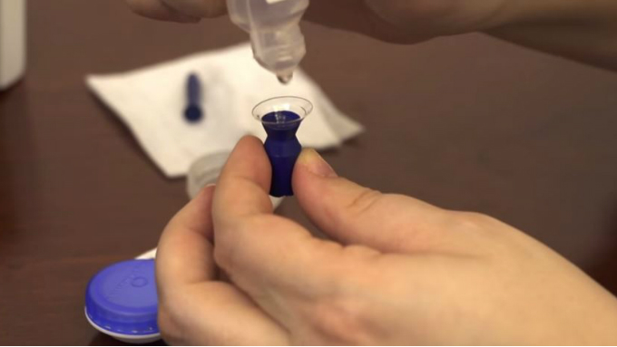
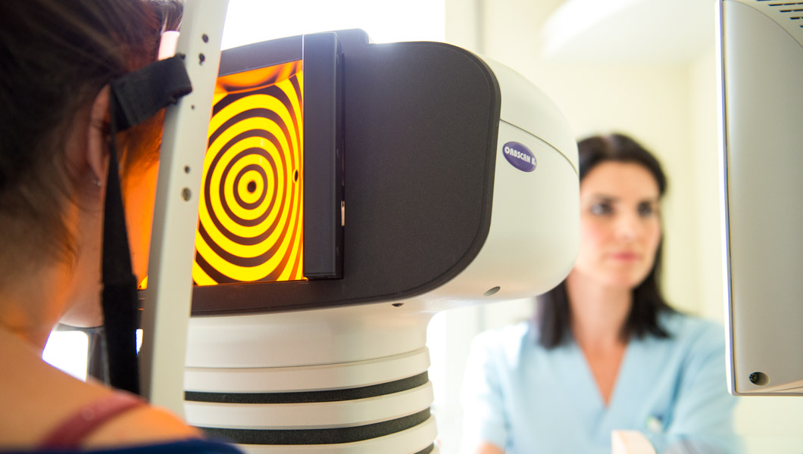

En la actualidad las necesidades de cada paciente son totalmente diferentes, motivo por el cual trabajamos con los mejores laboratorios del mundo. Logrando en cada usuario de lentes de contacto la personalización de los mismos teniendo una excelente agudeza visual sin sacrificar comodidad.
Contamos con una amplia gama de diseños y con más de 500 lentes de contacto de prueba de diferentes laboratorios. Todos los lentes de contacto cuentan con garantía de adaptación.
Somos los únicos en todo el Estado que contamos con lentes de contacto pediátrico y geriátrico. Todos nuestros productos cuentan con la aprobación de la FDA y COFEPRIS.
Lentes Esclerales
Son dispositivos ópticos que permiten el manejo de todo tipo de ectasias corneales como el caso de Queratoconos, Queratoglobos, Degeneracion Marginal Pelucida. Siendo una solución a pacientes con ectasias post quirúrgicas o que no tuvieron buen resultado con Queratomia Radial, Lasik, PRK, mejorando la sensibilidad al contraste, mala visión nocturna y aberraciones creadas por el desarrollo de la ectasia generada por la cirugía refractiva. Funcionando también en pacientes con Queratocono y que se les han colocado anillos Intracorneales o tratados con Crosslinking.
Lentes Híbridos
Dispositivos ópticos que se recomiendan en
pacientes que buscan la comodidad de un
lente de contacto blando pero con la calidad
óptica de un lente rígido.
Indicados en pacientes con astigmatismos
elevados que no se logran corregir con lente
de contacto rgp, en ectasias corneales como
Queratocono, Degeneración Marginal
Pelucida y post cirugías refractivas.
Una alternativa más para pacientes con
ectasias post quirúrgicas o que no tuvieron
buen resultado con Queratomia Radial, Lasik,
PRK, mejorando la sensibilidad al contraste,
mala visión nocturna y aberraciones creadas
por el desarrollo de la ectasia generada por la
cirugía refractiva.
Lentes Blandos
Dispositivos ópticos para pacientes que no
tienen ectasia corneal y tienen astigmatismos
regulares, o alguna ametropía elevada.
Contamos con lentes de contacto blandos de
diferente modalidad de acuerdo a las
necesidades de cada paciente: Lentes de contacto blandos
esféricos, tóricos, pupila negra, geometría
inversa, y de alta especialidad.
Lentes de Gas Permeable
Dispositivos ópticos indicados para
pacientes con ametropías elevadas,
astigmatismos regulares o irregulares como
en el manejo de ectasias corneales.
Nos permiten tener una buena calidad óptica
y mejorando la agudeza visual en diferentes
ametropías y ectasias.
Manejamos diseños esféricos, tóricos,
bitóricos, tricurvos, multicurvos y de
geometria inversa.
Topografía Corneal
Contamos con un topógrafo corneal que nos permite tener una perspectiva real de la superficie del ojo, con lo que podemos realizar adaptaciones de lentes de contacto específicos. Además de ayudar al seguimiento del control de miopía como del TVT.
